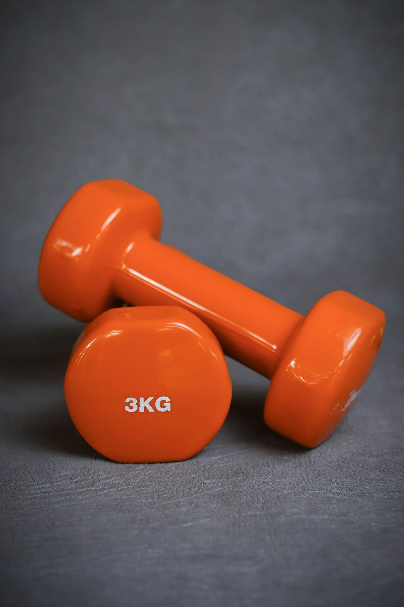

Starter plan
Beginner Dumbbell Workout at Home

This guide contains affiliate links. If you buy through them, Holistic Life may earn a small commission at no extra cost to you. How we use affiliate links.
Quick answer
- Six moves with one pair of dumbbells cover your whole body.
- Do 2 sets of 8 to 12 reps, resting about a minute between sets, on 2 or 3 non-consecutive days a week.
- Pick a weight where the last two reps feel hard but your form stays good.
- Add reps first, then a third set, then a little more weight.
A pair of dumbbells and a bit of floor space is enough for a full-body strength workout. This plan uses six simple moves, takes about 30 minutes, and is written for beginners. This is a nurse-run site, so the focus is on safe form, steady progress and a routine you can keep.
The CDC says adults need at least 2 days of muscle-strengthening activity each week. That is a good target for this plan.
Before you begin
Get one pair of dumbbells and clear a spot about the size of a yoga mat. Wear flat, stable shoes or go barefoot. If you have an injury, a health condition or have been inactive for a long time, ask a clinician before you start. Learn each move with no weight at all first, then add light dumbbells.
How to choose a starting weight
Pick a weight you can lift for 10 to 12 reps with control. The last two reps should feel hard, but your form should stay clean. If you have to swing, arch your back or hold your breath to finish, the weight is too heavy. If you could easily do many more reps, it is too light.
Different moves can use different weights. Legs are usually stronger than shoulders, so a pair that feels right for squats may be too heavy for presses. An adjustable pair or two sets of fixed weights helps.
Warm-up (3 minutes)
March in place for one minute. Do ten slow bodyweight squats and ten arm circles in each direction. Then do a set of each move below with very light weight, or no weight at all.
The six moves
Do all six in order. Rest about a minute between sets.
1. Goblet squat
Hold one dumbbell upright at your chest with both hands. Stand with feet slightly wider than your hips. Sit your hips back and down, keep your chest tall, then stand.
- Cue: Keep your heels on the floor and knees in line with your toes.
- Easier: Squat to a chair and stand back up.
2. Bent-over row
Hold a dumbbell in each hand. Hinge forward at the hips with a flat back and soft knees. Pull both elbows back toward your ribs, then lower slowly.
- Cue: Keep your neck long and your eyes on the floor.
- Easier: Rest one hand on a chair and row one arm at a time.
3. Overhead press
Stand with a dumbbell at each shoulder. Press them up until your arms are straight, then lower with control.
- Cue: Tighten your stomach lightly so your back does not arch.
- Easier: Sit on a chair with back support, or use lighter weights.
4. Romanian deadlift (hip hinge)
Hold the dumbbells in front of your thighs. Push your hips back with soft knees, sliding the weights down your legs. Stand tall by squeezing your glutes.
- Cue: Keep the weights close and your back flat.
- Easier: Practice with no weight, and stop when you feel a stretch in the back of your legs.
5. Floor chest press
Lie on your back, knees bent, a dumbbell in each hand. Press them up over your chest, then lower until your upper arms touch the floor.
- Cue: Keep your wrists straight and elbows at about a 45 degree angle from your body.
- Easier: Use lighter weights or press one arm at a time.
6. Dead bug
Lie on your back with arms up and knees bent over your hips. Slowly lower one arm and the opposite leg toward the floor, then return and switch sides.
- Cue: Keep your lower back gently pressed toward the floor.
- Easier: Move only your legs, or only your arms.
Sets, reps and rest
- Sets and reps: 2 sets of 8 to 12 reps for each move. For the dead bug, do 6 to 8 slow reps per side.
- Rest: About 60 seconds between sets.
- Days: Two or three non-consecutive days a week, such as Monday, Wednesday and Friday.
How to progress
- Add reps. When you can do 12 clean reps on both sets, you are ready to move on.
- Add a set. Go to 3 sets of the same moves.
- Add a little weight. Go up in the smallest step you can, and drop back to 8 reps.
Give each change a week or two before the next one. Slow progress is still progress.
Common mistakes
- Going too heavy too soon. It often leads to sloppy form.
- Rushing the lowering part. Lower slowly. It is a big part of the work.
- Holding your breath. Breathe out as you lift, and in as you lower.
- Skipping rest days. Muscles need time between sessions.
- Comparing yourself. Your starting point is yours alone.
Your gear
You really only need a pair of dumbbells. A mat and a bench are comfortable extras. For help planning a tidy corner, see our small space home gym starter kit.
Adjustable dumbbells
A single adjustable pair gives you several weights in the space of one. That helps you start light and add weight slowly, which is how most beginners progress.
What to look for
- A secure, quick way to change weight with no loose plates
- A small footprint and a stable tray or base
- A starting weight that is light enough to learn form
See adjustable dumbbells on Amazon (paid link)
Exercise mat
A mat makes the floor moves, like the chest press and dead bug, more comfortable for your back and shoulders.
What to look for
- Thick enough to cushion your spine
- A non-slip surface
- Long enough to lie on from head to hips
See exercise mats on Amazon (paid link)
Foldable bench
Optional. A bench lets you press and row from a more natural position, and a folding one can be stored away between workouts.
What to look for
- Folds flat for storage
- A stable frame with a non-slip base
- A firm pad wide enough to lie on
See foldable benches on Amazon (paid link)
Pair it with other habits
If you are new to exercise, our 15-minute beginner home workout is a gentler first step, and it works well on your off days. After a workout, you may want an easy dinner. Our high protein dinners are ready in about 30 minutes.
Frequently asked questions
How heavy should my dumbbells be?
Start lighter than you think. Choose a weight that lets you finish every rep with good form and leaves you feeling that the last two reps were hard. If you could do many more, go up a little next time.
Can I do this workout every day?
No. Muscles need time between sessions. Two or three non-consecutive days a week, such as Monday, Wednesday and Friday, is plenty to start.
Sources
Save this guide for later
Tap a pin to save it to your Pinterest boards.